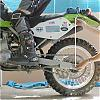
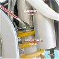

Rider sag is the amount the bike sags under its weight and yours, during static conditions,from its fully extended (topped out, no load) position. If your Rider sag is correct, your suspension is in the middle of its range, where it can handle the widest range of riding conditions without topping or bottoming out. For most riders, a static sag of 90-100 mm translates to the correct preload for dynamic conditions.
Unladen sag is the distance the suspension sags under its own weight, without a rider, from its fully extended position. Once you get your Rider sag correct, Unladen sag will tell you whether or not you have the correct spring for your riding weight. So always check Unladen sag after you set your Rider sag, because the preload adjustment affects both.
1. Put your bike on a stand, and measure the vertical distance from the rear axle to a spot on the
rear fender. Record this value as M0
2. Take your bike off the stand, put on your riding gear, take a standing position, and measure
again. Record this value as M1

3. Subtract M1 from M0. This is your Rider sag. If it’s between 90 and 100mm, skip to 5. If not, put your bike on a stand, lubricate the threads on the body of the shock, and proceed to 4.
4. If your Rider sag in 3 was significantly less than 90 mm, decrease the preload by moving the
rings up the shock body (ccw). If it’s significantly more than 100 mm, increase preload by moving rings down
shock body (cw). Repeat Steps 2 through 4 until Rider sag is between 90 and 100mm, then continue with 5.

5. With your Rider sag now correct, and your bike off the stand, measure again, but this time with
the bike under its own weight. Record this value as M2
6. Subtract M2 from M0. This is your Unladen sag. If it’s between 25 and 35mm, your preload and spring rate are correct. Take your bike out for a test ride, then come back to this forum, and do "Adjust Your Dampening." If your Unladen sag is not between 25 and 35mm, proceed to 7
7. If your Unladen sag is less than 25 mm with the correct Rider sag, your spring is probably too soft for your riding weight. What happened is this: to get your Rider sag correct, you set the preload higher than it would have been with the correct (stiffer) spring. So the bike sags less than the recommended value under its own weight. If your Unladen sag is more than 35mm with the correct Rider sag, your spring is probably too stiff for your riding weight. What happened is this: to get your Rider sag correct, you set the preload lower than it would have been with the correct (softer) spring. So the bike sags more than the recommended value under its own weight. In either case, go to www.racetech.com, and checkout the recommended spring rates for your bike and riding weight. Buy the spring and install it, then recheck your Rider and Unladen sag, and adjust as necessary.